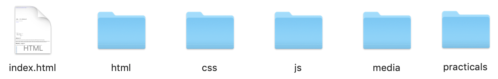
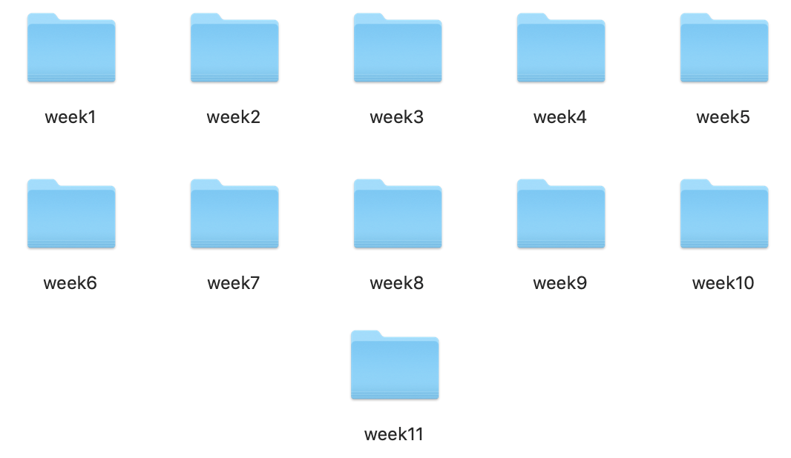
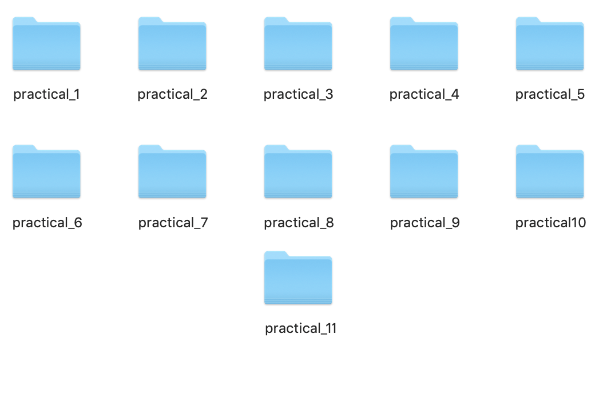
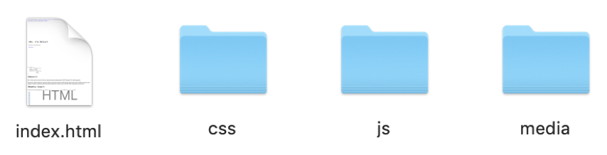
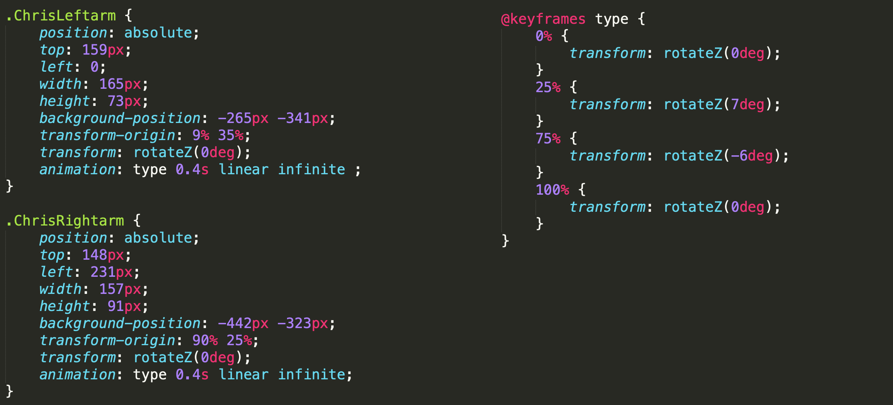
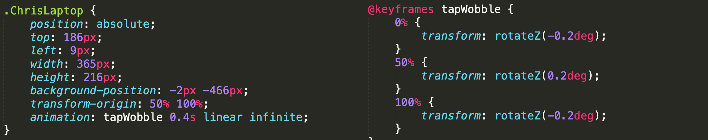
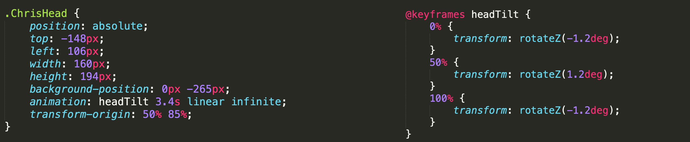

<Objectives/>
Creating a learning log website
Application of CSS
Verification of the CSS
<Summary/>
Creating a learning log website
This practical involved the creation of this learning log website. With previous knowledge from practical_0 a basic webpage along with appropriate file structure was formed. The first step was developing a basic index page with inline styling to generate scope for design. This index page contained a navigation bar within a header, grid sections within the body that held links to weekly practicals/summaries, followed by a footer with a contact section. This contact section was my highlighted email address with a 'mailto' property that opens a users default email program once clicked upon. This page was named index.html and stored within the learning_log folder.
Each weekly learning log page, had been assigned to it's own seperate folder. These weekly learning log folders 'weeks 1-10' were kept in their main folder 'html'. Each learning log had a link that contained a live preview of the practical followed by a summary, further information and useful resources used during that practical. The further information was only included if deemed necessary. The practicals followed the same file structure as the learning logs, each practical page assigned to the relevant practical folder and stored within it's own seperate folder.
'Learning_log' file structure
Figure 1

'html' folder file structure
Figure 2

'practicals' file structure
Figure 3

Practicals week 1-10 file structure
Figure 4

Application of CSS
Task 0 was creating the learning_log index page that contained all html, CSS and javascript code in a single file. Within this task CSS, js and media files can be seperately stored within their belonging folders. By removing any inline styling previously made and storing it in a single file, it's easier to maintain, update and fault find code, leading to greater consistency in design. 'style.css' has been placed in the CSS folder & 'js.js' in the js folder. Any images or media files is stored within the 'media' folder.
Verification of the CSS
The final task was to verify the CSS being used within the learning_log. CSS needs to adhere to a standard to ensure that it can be understood by all web clients that may encounter it. With the assistance of the W3C group they offer a validator hosted online at http://jigsaw.w3.org/cssvalidator. Once uploaded the validator will generate a list of errors, warnings and valid CSS information.
Results of the validator:
The style.css document validates as CSS level 3 + SVG! This means the CSS used meets international standards and this icon may be used on any page that validates.

<Further Information/>
Creating an animation
When creating this learning log, I took into consideration what might attract users to this page. By keeping font sizes and colour schemes the same consistent design, this is aesthetically pleasing. I took into account aspects that may initally grab the users attention when entering the page. I decided I would form an animation of myself using CSS. CodePen.io was a great inspiration for animations also with the aid of w3 schools. I decided that the animation would be a character of myself typing code on a laptop.
Components
The first step was to generate a PNG image with seperate elements that would be used. This PNG image would be called character1.png and placed in the media folder. The image would contain the character's upper body, left and right arms, head, eyes, and the laptop. This animation would solely focus on the size and position of relevant elements along with the @keyframes rule that would move the elements.
Figure 6
Component Properties
Second step was to create the initial animation element, .ChrisAnimation1 this is where the animation would be stored stating the position and size. Next we assign each character component to an element, stating the size, position and transform properties held within .ChrisAnimation1. Now that each component has been placed correctly within the element it should look something like this:
Figure 7
@Keyframes
Now that all main elements had been properly scaled and positioned, the next step was to begin the animation. As established the animation is a character of myself coding on a laptop. This means the animation is held in each arm typing, laptop wobbling, eyes moving/blinking and a slight head tilt. In order to get this animation to work it must be binded to these elements. As shown in the style.css the @keyframe attributes have been assigned with a name and transform properties. The transform property allows the rotation/movement of elements within the animation and have been referenced accordingly.
Animation Typing
The .ChrisLeftarm and .ChrisRightarm elements have been assigned relevant size and position properties within the ChrisAnimation1 element. An animation property within each element is referenced to the @keyframes atributes. This tells each arm to rotate a certain degrees using the transform property and how fast that animation should last for in seconds, because each element uses a infinite property, this animation is in a constant loop. Same applies to the laptop and head tilt animation. Linear infinite specifies the animation has the same speed from start to end.
Figure 8

Animation Laptop
Figure 9

Animation Eyes Move/Blink
Same principle here although instead of rotating, the eyes animation is moving side to side across the x-axis every 5 seconds. This animation also allows the eyes to blink in the same position every 5 seconds. By using a ease-in-out infinite instead of linear infinite, this specifies the animation has a slow start and end. The steps() function allows the animation to be broken up into segments rather than one long transition.
Figure 10

Animation Head Tilt
We can see this animation moves at a slower pace than the rest.
Figure 11

Click for animation preview